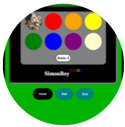
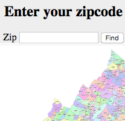
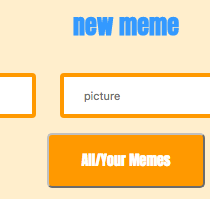

A tasteful business card

Matt is a full-stack web developer in the DC area. He is a mediocre mandolinist, a competent rugby player, and a savant at making blueberry pancakes.
You can tell that he is super official and stuff because of his sweet, digital business card!

SimonBoy COLOR is a silly romp of a pattern memorization game with a basic AI built with JS/jQuery, HTML, CSS, git, and a whole lotta heart!
SimonBoy COLOR's design is one of simple nostalgia, framed within the screen of a GameBoy COLOR.
crowd_sourcedCandidates - Virginia

crowd_sourcedCandidates is a full-stack app (with a Rails back-end and SQL database) that gives voters a greater voice in local elections, candidates a platform to share their message, and parties a data base of popular candidates and voting trends in elections that may fly below their radar.
dankMeme Generator

This full-stack app provides what no one asked for: another meme generator. I worked with a group to make this app filled with API-generated and user created jokes/images.
My role was to build the Angular front-end framework, set up the session storage, and to build the Rails back-end and SQL database.